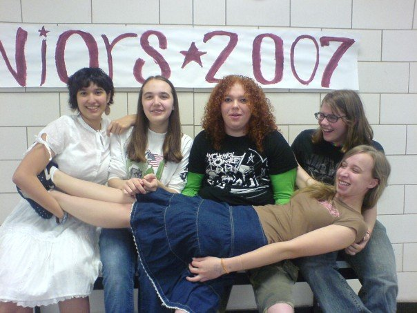
First bike ride
April 30, 2006 · age 13
From Brandy's MySpace blog. (Font colors were preserved on the original!)
OMG!!!!! I just rode a motorcycle for the first time!!!!
It was freakin awesome!!!! My step-Dad was like it was freezin zand I said that the only part of me was cold was my fingertips and hes like I was blocking all of ur cold air. It was friggin sweet!!!!
Ok...I'm done...
Plus my crush is online ^_^
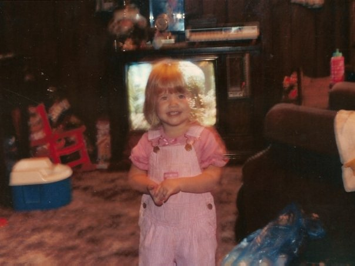
Things I'm beginning to realize...
May 28, 2006 · current mood: indescribable
Brandy reflects on self-discovery, friendship, and overcoming struggles with loneliness, depression, and judgment, in her own words, in her own colors.
When I first discovered things about myself, I thought I was the only one out there. Now as time rolls on, I realize that people I thought were never there are now helping me. I'm also realizing that there are people my age in the same place I was just a few years ago. I feel that as I realize these things, I get wiser, and more able to help people out; be a mentor for those who are still confused and lost. As you are reading this, some people may be saying "Oh how does she know?" or "What do you mean?". There are many issues that I have had to deal with over the past 3 years and it hasn't gotten easier. I've had to deal with violence, depression, lonliness, losing and gaining friends, and keeping all of this a secret. And this is not just me, either. Most of this is about people I do or once cared for. They made the mistakes and who was left to clean it up? Me. I believe that most of these experiences has made me wiser and a better person. Some of them I wish to forget about but I never regret. I'm hoping someone reads this and realizes that rumors don't say anything about me. You may think you know me because you've heard a rumor I asked out this person or I'm (insert stereotype). All I want is to be myself in a world without prejudice or rumors. I think I've found that in people who I believe I have gained as friends. Wish me luck and pray that history doesn't repeat itself.
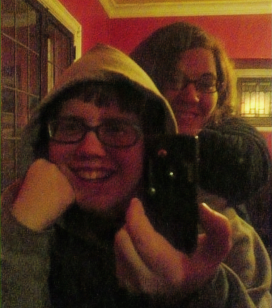
Homophobia is Wrong
June 6, 2006 · current mood: scared
A raw perspective on the impact of homophobia, discrimination, and the struggle for acceptance.
I am the girl kicked out of her home because I confided in my mother that I am a lesbian.
I am the prostitute working the streets because nobody will hire a transsexual woman.
I am the sister who holds her gay brother tight through the painful, tear-filled nights.
We are the parents who buried our daughter long before her time.
I am the man who died alone in the hospital because they would not let my partner of twenty-seven years into the room.
I am the foster child who wakes up with nightmares of being taken away from the two fathers who are the only loving family I have ever had. I wish they could adopt me.
I am one of the lucky ones, I guess. I survived the attack that left me in a coma for three weeks, and in another year I will probably be able to walk again.
I am not one of the lucky ones. I killed myself just weeks before graduating high school.
It was simply too much to bear.
We are the couple who had the realtor hang up on us when she found out we wanted to rent a one-bedroom for two men.
I am the person who never knows which bathroom I should use if I want to avoid getting the management called on me.
I am the mother who is not allowed to even visit the children I bore, nursed, and raised. The court says I am an unfit mother because I now live with another woman.
I am the domestic-violence survivor who found the support system grow suddenly cold and distant when they found out my abusive partner is also a woman.
I am the domestic-violence survivor who has no support system to turn to because I am male.
I am the father who has never hugged his son because I grew up afraid to show affection to other men.
I am the home-economics teacher who always wanted to teach gym until someone told me that only lesbians do that.
I am the man who died when the paramedics stopped treating me as soon as they realized I was transsexual.
I am the person who feels guilty because I think I could be a much better person if I didnt have to always deal with society hating me.
I am the man who stopped attending church, not because I don't believe, but because they closed their doors to my kind.
I am the person who has to hide what this world needs most: love.
Pass this along if you believe homophobia is wrong.
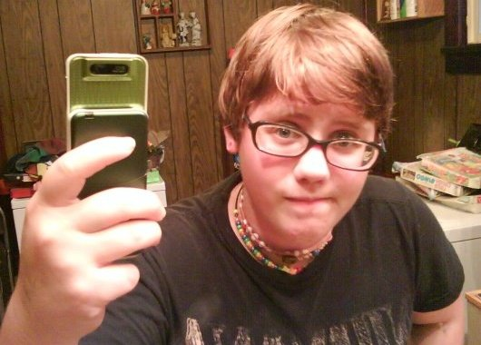
How stupid does this sound?!?!
June 15, 2006 · current mood: crushed
Thirteen-year-old Brandy shares her thoughts and frustrations around homophobia.
1) Being gay is not natural. Real Brits always reject unnatural things like eyeglasses, polyester, and air conditioning.
2) Gay marriage will encourage people to be gay, in the same way that hanging around tall people will make you tall.
3) Gay marriage will change the foundation of society; we could never adapt to new social norms. Just like we haven't adapted to cars, the service-sector economy, or longer life spans.
4) Straight marriage has been around a long time and hasn't changed at all; women are still property, blacks still can't marry whites, and divorce is still illegal.
5) Straight marriage would be less meaningful if gay marriage were allowed; the sanctity of Britney Spears' 55-hour just-for-fun marriage would be destroyed.
6) Straight marriages are valid because they produce children. Gay couples, infertile couples, and old people shouldn't be allowed to marry because our orphanages aren't full yet, and the world needs more children.
7) Obviously gay parents will raise gay children, since straight parents only raise straight children.
8) Gay marriage is not supported by religion. In a theocracy like ours, the values of one religion are imposed on the entire country. That's why we have only one religion in Britain.
9) Children can never succeed without a male and a female role model at home. That's why we as a society expressly forbid single parents to raise children.
10) Legalizing gay marriage will open the door to all kinds of crazy behavior. People may even wish to marry their pets because a dog has legal standing and can sign a marriage contract.
11) Gay couples are a harmful influence on their kids, because all gay couples abuse their kids, daily.
(one of the saddest parts about our society is that these arguments, before the humorous common sense, are some of the real reasons why people can't accept gay marriages.)
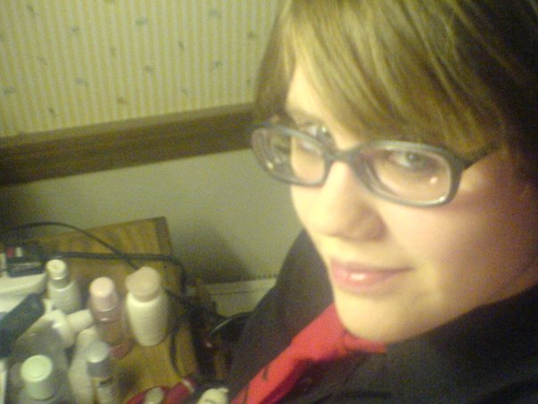
Confused...
June 17, 2006 · current mood: rejected
Ok...in the past six months a lot has gone on in my life. First of all I've been back and forth with my father with visitation, child support, and all the baggage that goes with it. That has ended badly and has resulted in me pretty much wishing to never see him again. Right now I must go to counciling and so should he. The judge will look at the order of the councilors and decide what is best. I think that this is very wise because I can almost guarantee that I will never have to see him again because he will never go. I am also forced back to court at the end of July. I hope that this is the last time.
My family life has gotten somewhat better. My Mom and I aren't fighting quite as much as we used to. I believe I've become much more patient and have lost my illusion of superiorty. Most of the time I just don't feel like aruguing. Jimmy is pretty kewl even though I hate it when he just leaves me at home.
Now my friends are a whole different issue. My best friend for so many years I now hate and have no inclination where this urge of hatred has come from. She has not done anything to me. Maybe it's my concious catching up with me. When she did do something to me, I blew it off and forgave her. Now maybe I regret that and am holding a grudge. I am also quite upset because she told my ex's Mom all this private stuff about me and now I am not allowed to see her. I don't believe that she knows I know who told.
I have also gotten some new friends. Well not exactly new but people that we're always there but I kind of blew off and wanted nothing to do with because I thought it mean betraying my other friends. Now I have both and am happier then I have been in a long time with my friends. There are a few new people in my life that have made my life better. I've found out that a few of them have gone threw a lot of the stuff I am trying to figure out about myself and they've helped me along the way.
Now onto a subject I really don't want to bring up because it is the most paintful yet I know that if I talk about it, it will help me to accept it. My teenage love life can be described in two words: It sucks. In the past six months I have gone out with exactly 4 people. Out of those 4, I've loved 2. And out of those original 4, 2 of them were girls. I'm not going to mention names because of people who may be looking here. The first person I went out with I loved. He was great. I had my first kiss with him and I grew to love him in 1 week. On my birthday, he moved to Texas. I haven't talked to him since January. The second person I have gone out with was a total illusion. We had been going out since last July and broke up in April. It was on/off the whole time. I learned to love her, but I guess the whole time she didn't love me. She couldn't stand me. She went out with me because she wanted to make me happy. Everybody I've talked to who knew us, knew that all of this was a lie. She couldn't except herself so we moved on. That was very difficult for me. In the last few months of our relationship, I started going out with this one kid. I had liked him for quite a while. Even though I never loved him, he was a great friend and I wouldn't trade his friendship for the world. I am still bitter about the fact that we had to break up because he refused any kind of public displays of affection.
Now the last person I will talk about was the person I loved the most. I also went out with her for the shortest time. Before we went out, she was friends with my ex. Thats how we met. Well my ex wanted to keep us to herself and not let us become friends. We pretty much thought that the other hated us and never talked. Eventually she called me and we started to talk. We figured out that we liked one another and started to go out. I loved that girl. We only got to spend one night together unfortunatly before her mother came into the picture. My ex had told her mother that I was bi and her mother told my girlfriend that she was never allowed to see me again. It ended really badly. I refused to talk to her for weeks. I still had feelings for her and couldn't confront them. Now we talk but we have to be careful. She won't go out with me again though. I hope we will be able to stay good friends. Other things have come and gone in my life, but as they come I deal.
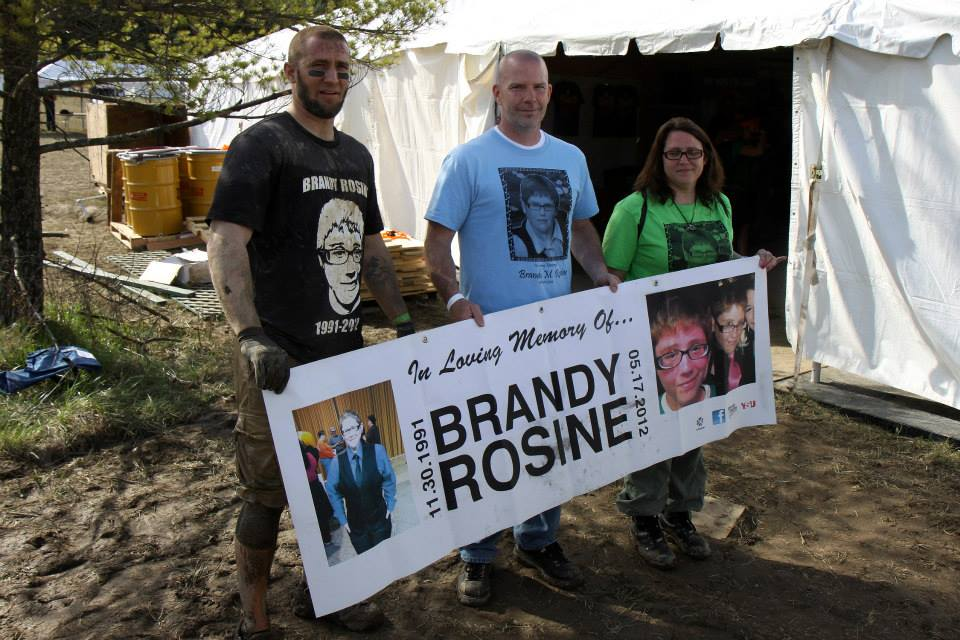
Empathy
July 1, 2006 · current mood: frustrated
I think that empathy has been lost on our generation. Maybe it's just me...I'm only 14 so I guess I shouldn't know much. I do know that people walk around thinking that everybody is always happy and they're the one that's sad, angry, etc. I've seen this quote hundreds of times: "Friends are the ones that can see the biggest smile on your face, yet still know something's wrong." Well if that's true then about 90f my friends are wrong. I understand that the popular thing with teenagers are being all "I hate the world. The world hates me." Well that's okay, but sometimes you just have to laugh and have a good time. If you don't, then I think that you have some kind of mental problem. See a doctor. I think that almost all of todays teenagers have no room for any kind of empathetic feeling in their moody, hectic lives. I have been around people who I've broken down in front of and they just walk away and leave me be. That's not compassion. And those people were my friends. Nobody has compassion. Nobody can show feeling for fear of being hurt or because the person that is hurting is just not their "type" of person. Don't you think that if a person refuses to say anything but "ok" that it's a sign that someone or something has hurt this person or made him or her feel this way? If I were to find one of my friends hurt; physically, emotionally, whatever; I would want to help them. What's sad is that I feel (and have witnessed) that almost none of my friends would do this for me. We humans live for compassion. It is written in Darwin. In every known clinical research done, humans strive on that one hug from their mother or that one comforting word from a friend. From birth, we are constantly comforted. What happened to society?
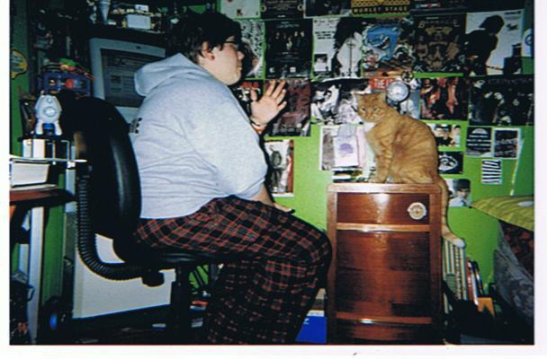
stupid little poem
July 8, 2006 · current mood: depressed
I'm just sitting here, knowing
that everything you said (everything)
was wrong. why does this hurt so bad?
it hurts me and my heart.
the lies (the lies)
the words (the words)
you said it, you told me
everything I wanted to hear
why did you leave me?
I did everything I could
I caught you when you fell
and you the same for me
it was like a piece of heaven
then you dropped me and my heart
the lies (the lies)
the words (the words)
it could have been different
what happened to us?
why did you leave me and my heart?
I wish it was different
I wish you had changed
It's over now
why can't we go back in time?
the end (the end)
the beginning (the beginning)
I'm moving on, it's getting better
I hope you can too...
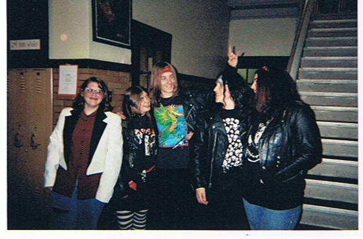
Love
July 11, 2006 · current mood: weird
The truth is, everyone wants to fall in love and be loved back but alot of people fear love's obstacles and the pain that they may feel because of it. Though one may want to love someone, they often hold back, waiting to love that other person only until they are certain of recieving equal love in return, but if everyone went by those standards, we could end up waiting forever. If you put expectations on love, you'll surely be disappointed eventually, because it's not likely that most people can reach all those needs, no matter how great their love is toward them. The only person we can demand and expect things to change is from ourselves. Others can and will only give what they are able, not what you desire they give. From experience, I have learned that each person's love grows to their own rate, in their manner, on their own time. And sometimes people are scared to not be loved backed immediately when said they love the other person, but love is patient and will always continue to expand if you give it faith and most importantly a chance. The biggest thing I can emphasize on love is that love lives the moment. True love doesn't mean a life long commitement. Don't expect that in the future, ( a day, month, year,) that the feelings you hold at the present will remain the same. There is only the moment and only the moment has true value. Love holds experiences from the past-but never can it relive it- and neither can it live the future, because tomorrow may never come. There is only one thing of which you can be certain and that is change. To deny change, denies reality. Attitudes change, feelings change, desires change, and especially love changes. So you can't stop it, don't hold back, just go with it and experience all the joy you can cause you never know how long it will last.....
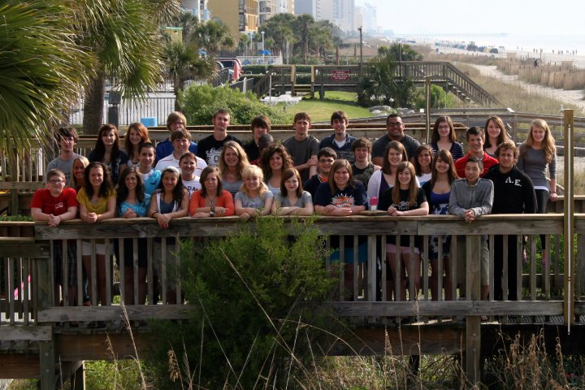
I'm this kinda girl...
July 15, 2006 · current mood: enthralled
Oh, teenagers! <3
I'm the girl who will put her head on your shoulder, not because she's sleepy, but because she wants to be closer to you...
I'm the girl who likes to be kissed under the stars, more than inside your bedroom or in a expensive restaurant...
I'm the girl who holds your hand and plays with it....
I'm the girl who doesn't mind you playing with her hair....
I'm the girl who makes jokes with your mom....
I'm the girl who stares into your eyes looking for a reason what you see in me.........
I'm the girl who loves to end a hug with a kiss...
I'm the girl who will take care of you when you are sick...
I'm the girl who you can talk to about anything...
I'm the girl who will cry when YOU'RE hurt.......
I'm the girl who laughs at your jokes...
I'm the girl who will have many inside jokes with you and remember each one...
I'm the girl who will brag about you to all of my friends...
I'm the girl who will listen to you talk...
I'm the girl who remembers how and when we first met.......
I'm the girl who loves to hear you sing, even if you horrible....
I'm the girl who promises to never leave, and keeps it......
I'm the girl who loves when you hug me for no apparent reason...
I'm the girl who loves it when you hug me from behind or kiss me on the forehead....
I'm the girl who loves you for you ; and doesn't care what other people say about us...
I'm the girl who will love you unconditionally for the rest of your life...
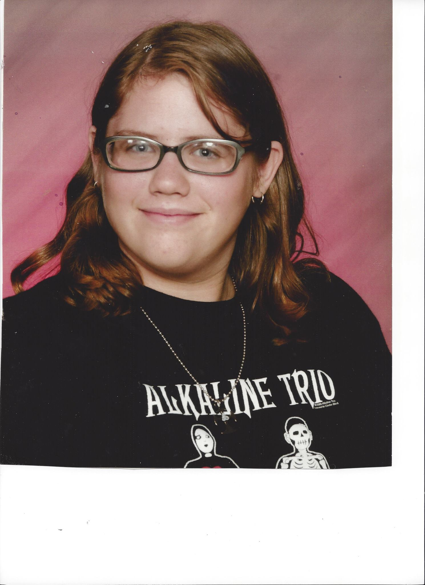
My Sidekick
July 18, 2006 · current mood: creative
Special treatment
Are the words she used to describe
The pain that she feels insied
Of her murderous mind
It's different sitting here
Without her by my side
I want her here,
My sidekick
She told me to leave,
To just get out.
Of her life and everything she knew,
That's what I did
She's not here
She should be here
I want her here sitting
By my side,
My sidekick
Special treatment
Are the words she used to describe
The pain inside
Of my murderous mind
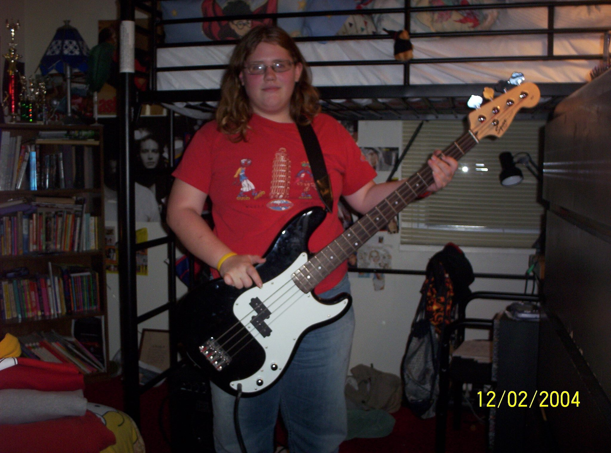
Random Thoughts
July 20, 2006 · current mood: lonely
Why is there racism in the world? Hasn't there been many different races for all enternity?
Why is it so wierd to be different? Yet some people work all of there lives to stick out?
Why are there taboos? Nothing new has come in the world, why after thousands of years people are scared of difference?
Why is age a difference? Why are there some people who are 10 yet act like they're 20 and people who are 20 and act like they're 10?
Nobody wants to stand out yet nobody wants to fit in?
Why to people get judged on how they feel?
Not that I want everyone born the same, but why does there have to be so many religions, beliefs, and differences?
Why are people so intolerant yet say that they are open minded?
Why are words more hurtful than sticks and stones?
Why is society going downhill so quickly?
Just so you know...
I'm using these colors because these were the ones on the box of vanilla waffers I was eating.
And my bodyguards are Marco, Seb, and Johnny boy...So don't mess with me or they'll screw u up! lol
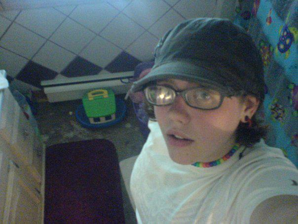
Crush
July 25, 2006 · current mood: weird
Brandy was quoting the song "The Curse of Curves" by Cute Is What We Aim For.
I got birds in my ears and a devil on my shoulder,
and i phone to the other and i can't get a hold of her
what's a crush to do?
what's a crush to do, when he can't get through?
gramatically speaking your adorable
and from what i hear your quite affordable
but i like them pricey
so exaggerate and tr-tr-tr-tr-tr-tr-trick me
pretty please just trick me, pretty please
I got birds in my ears and a devil on my shoulder,
and i phone to the other and i can't get a hold of her
what's a crush to do?
what's a crush to do?
I got birds in my ears and a devil on my shoulder,
and i phone to the other and i can't get a hold of her
what's a crush to do?
what's a crush to do when he cant get...through.
I'm obsessed and stressed with this mess
I can't think of things, to write down, to type down
and these fingertips are moving faster than these lips
so you can only imagine how jealous my mouth is
so you can only imagine how jealous my mouth is
I got birds in my ears and a devil on my shoulder,
and i phone to the other and i can't get a hold of her
what's a crush to do?
what's a crush to do?
I got birds in my ears and a devil on my shoulder..
whats a crush, whats a crush.. to do-ooooo
yeah..yeah-eh-eh, yeh-eh-eh
ahhh
turned on a dime, spinnin round,
so get up and shine, shine right now
we'll even have a crowd
we'll make this hurt just now (?)
gramatically speaking you adorable
from what i hear your quite affordable
but i like them pricey
so exaggerate and tr-tr-tr-tr-tr-tr-trick me
i got birds in my ears...
and a devil on my shoulder
whats a crush to do?
whats a crush to do?
i got birds in my ears...
and a devil on my shoulder
whats a crush to do when he cant get through
when he cant get a hold of her?
whats a crush, whats a crush to do-oo-oo-oo-oo
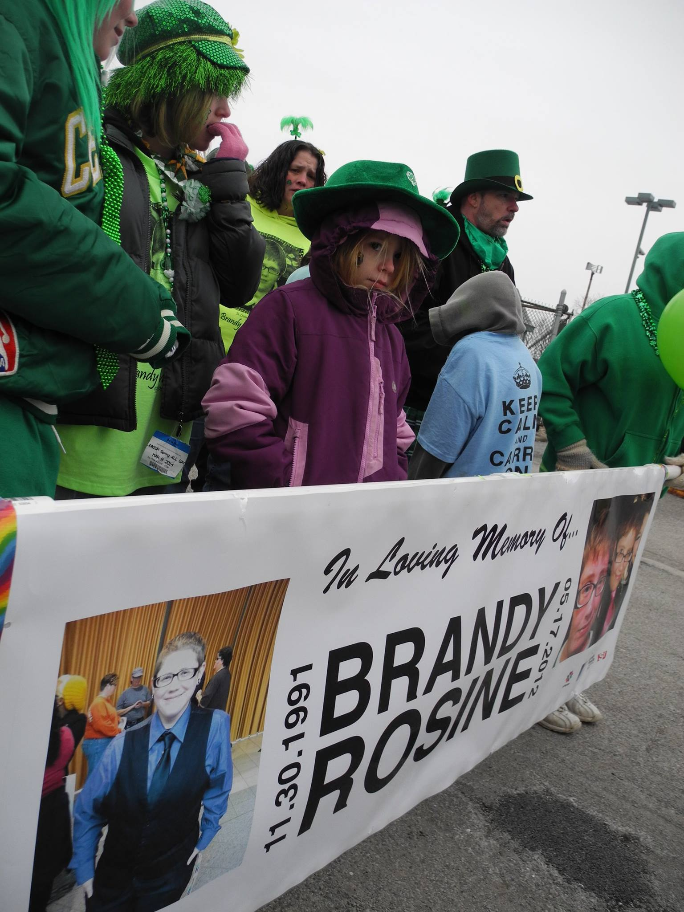
Maybe
July 31, 2006 · current mood: sick
Maybe if you felt the hate, and the pain that comes from being hated for being who you are, then perhaps you could accept that not everyone is the same. One is told that they should be them selves, yet to be different is often not okay. When the one you love the most tells you they are not the same, do not make them feel ashamed, because after awhile, they wont be able to take the pain and its not a choice, its just how they are. Why should one change how they are? To please anothers believes? Do not feel that you should agree with every belief just please respect everyone despite the differences, try to create a world of love and not of hate. When one says such things you make one feel like shit they feel like they are less than human like they dont deserve to live, so when I say you shouldnt hate its good for you too, because when those you hate are dead because they couldnt take the pain, youll have to live with the rest of your life this pain spoken of its this kind of pain that makes people ashamed and afraid tell people what they are even those that love them. So once again maybe if you felt the hate and the pain that comes from being hated for being who you are then maybe you would accept that others are different, and not make them feel such pain.
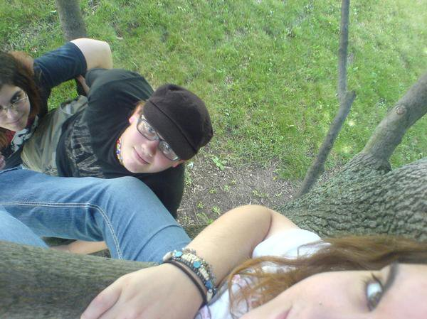
Story I wrote
August 2, 2006 · current mood: energetic
In the forest which is my soul, there stands many living trees of varying species, sizes, and ages. This forest has no true name, for what name do you give your heart, as these trees are the people I love. They are family, friends, and lovers, and there is some I have never met, but only seen from afar.
When times are dark, or simply when I am alone, I walk through the forest, revisiting trees that are there. I often climb that hill, which is at the center of the forest and scan the forest with a gaze. Across the tree tops, I see many familiar trees, from the old oaks of life long friends to sturdy elm that are my family.
On that day, which I first saw you I had walked the forest slowly and finally climbed that hill. I stood at its peak and turned slowly around, as I have done a hundred times before and would do a hundred times more. The sun was out, as it always is. and the forest was alive with color, and movement.
I saw you there amongst my favorite trees, tall and proud stood a willow. So I stopped and marveled at your presence. This beautiful willow captured me, for I stood there for hours, as the sun was slowly descending. The sun fell behind your branches and a musical wind, which could only be your voice, sang out.
This wind caused your branches to sway slowly and they parted to let the sun pour through. The forest stopped, for my heart had stopped and all thought, what a beautiful smile; pure and full of love. Time froze even if time has no meaning in this place, and I bathed in the light of the newest tree in the forest. The trees around the willow turned to her light, for she was now the true center of the forest.
It has been many days now since your arrival, and I find myself returning more often than usual. For this place is no longer an escape from life, but an extension to my life and to my existence. For this reason, I wish to thank you and I hope you will stay in the forest as long as you are able.
Today, I have returned to the forest, to the hill and to the willow, for I still watch this willow from afar. The willow is an entirely different world, but one day I will have the courage if not the opportunity to meet. On that day, there shall appear a new sun, a new forest and a new soul for ours will merge into one.